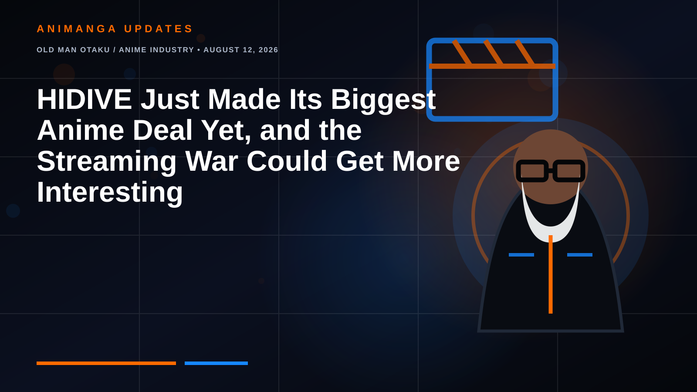

OLD MAN OTAKU / ANIME INDUSTRY • AUGUST 12, 2026
HIDIVE Just Made Its Biggest Anime Deal Yet, and the Streaming War Could Get More Interesting
HIDIVE is making a bigger play for the future of seasonal anime through an expanded licensing partnership with Japanese broadcaster Mainichi Broadcasting System (MBS).

HIDIVE is making a bigger play for the future of seasonal anime.
The anime streaming service and Japanese broadcaster Mainichi Broadcasting System (MBS) have expanded their licensing partnership in what is being described as HIDIVE's largest programming agreement to date.
For anime fans, the immediate result is straightforward: more MBS-produced anime will be headed to HIDIVE.
The bigger story, however, is what this says about the increasingly competitive battle for anime outside Japan.
Crunchyroll may remain the name most viewers associate with dedicated anime streaming, but HIDIVE clearly isn't interested in quietly sitting on the other side of the battlefield.
It's stocking the shelves.
What HIDIVE and MBS Announced
HIDIVE and MBS already had an existing relationship, but their newly expanded agreement significantly increases the amount of anime programming flowing between the Japanese broadcaster and the streaming platform.
MBS has been involved with a long list of notable anime productions and broadcasts over the years, making a stronger pipeline between the companies potentially valuable for HIDIVE.
Rather than competing for every individual series after projects begin attracting attention, agreements of this kind can give streaming services access to a more predictable stream of upcoming programming.
That's particularly important in anime.
Seasonal streaming has become one of the primary ways international audiences follow Japanese animation. Every January, April, July and October effectively resets part of the competition as platforms reveal which new shows they've licensed.
A service that repeatedly lands anticipated titles has a much easier time convincing anime viewers to keep a subscription active.
HIDIVE Needs More Than One Surprise Hit
HIDIVE has already demonstrated that it can land anime capable of breaking through the enormous amount of content released every season.
One of the clearest examples was Oshi no Ko.
Its success gave HIDIVE an exclusive series that became part of the larger anime conversation rather than merely appealing to viewers already using the service.
But there's a fundamental difference between occasionally landing a major title and building a consistent programming pipeline.
That's why the MBS agreement is more interesting than the announcement of one additional anime license.
HIDIVE needs depth.
It needs shows capable of attracting hardcore anime viewers, but it also needs enough consistent programming that those viewers don't disappear immediately after finishing one series.
A larger relationship with a major Japanese broadcaster can help create exactly that kind of catalog.
The Anime Streaming Market Is Changing
The international anime business looks considerably different than it did a decade ago.
Anime was once scattered across numerous streaming services, physical releases, television broadcasters and niche platforms.
Consolidation changed that landscape dramatically.
Crunchyroll's combination with Funimation created an enormous dedicated anime platform with a deep library and significant licensing power.
Netflix simultaneously became far more aggressive about anime, funding original projects, acquiring international streaming rights and turning some releases into worldwide launches.
Disney has also entered the licensing arena, while other general entertainment platforms periodically acquire individual anime properties.
HIDIVE occupies an interesting position in that environment.
It doesn't need to become Crunchyroll overnight.
It needs to become valuable enough that serious anime viewers don't see the choice as Crunchyroll or HIDIVE.
The better outcome for HIDIVE is:
Crunchyroll and HIDIVE.
That single word makes an enormous difference.
Exclusives Are the Real Weapon
Streaming libraries are useful, but exclusive programming drives subscriptions.
Anime fans regularly encounter a frustrating reality during seasonal viewing: the shows they want aren't necessarily available on the same platform.
One series may land on Crunchyroll. Another goes to Netflix. Another becomes a Disney exclusive. And something unexpected lands on HIDIVE.
From the perspective of streaming companies, that fragmentation isn't accidental.
Exclusive anime gives viewers a reason to enter another ecosystem.
The expanded MBS relationship potentially gives HIDIVE more opportunities to secure exactly that kind of programming.
If even a handful of those future titles become breakout successes, the value of the agreement becomes much larger than the number of shows involved.
Why MBS Matters
MBS isn't simply a company distributing obscure animation.
The broadcaster has longstanding connections to Japan's anime industry and has participated in the broadcasting and production ecosystem surrounding numerous significant franchises.
That history makes an expanded relationship with HIDIVE strategically important.
International anime licensing often looks simple from the outside.
A show exists in Japan, a streaming service acquires it, subtitles appear, and viewers press play.
Behind that process is a complicated network involving production committees, broadcasters, publishers, animation studios, distributors and international licensors.
Relationships matter.
Building a stronger direct relationship with a company such as MBS potentially places HIDIVE closer to upcoming productions before international audiences even know which titles will become seasonal favorites.
Competition Could Be Good for Anime Fans
There is an obvious downside to increased streaming competition.
Subscriptions multiply.
Nobody particularly enjoys discovering that the fourth anime on their seasonal watchlist requires the fourth streaming service on their credit-card statement.
But there is another side to the equation.
A marketplace dominated entirely by one buyer would give Japanese rights holders fewer potential international partners.
Competition means multiple companies have reasons to fight for anime.
That can encourage investment in licensing, localization, marketing and theatrical distribution.
It can also create opportunities for shows that might otherwise struggle to receive significant international promotion.
The ideal scenario isn't endless fragmentation.
It's meaningful competition.
HIDIVE becoming stronger could provide some of it.
Crunchyroll Isn't Suddenly in Trouble
It's important not to exaggerate what this agreement means.
Crunchyroll remains an enormous force in international anime streaming, with a massive catalog, established brand recognition and worldwide infrastructure.
One expanded licensing partnership doesn't erase those advantages.
Netflix also remains capable of spending heavily on individual projects and global releases.
HIDIVE therefore isn't suddenly becoming the largest anime service because of one agreement.
But that isn't the interesting question.
The interesting question is whether HIDIVE can become more consistently essential.
If its upcoming seasons contain multiple exclusives that anime audiences genuinely don't want to miss, the platform's position changes.
And programming agreements are how you begin building that consistency.
Anime Has Become Too Valuable to Ignore
There is another reason this deal deserves attention.
Anime isn't niche international filler anymore.
Major entertainment companies increasingly treat Japanese animation as globally valuable intellectual property.
Anime films can generate enormous theatrical numbers. Manga sales reach audiences far beyond Japan. Anime conventions attract massive crowds. Characters become international merchandising brands.
Streaming services know that anime audiences are highly engaged, frequently follow multiple series simultaneously and often maintain long-term relationships with franchises.
That makes anime extremely attractive in the subscription economy.
HIDIVE's expanded investment through its MBS relationship is another signal that companies expect that demand to continue.
What Happens Next?
The most important part hasn't happened yet.
We need to see the anime.
A licensing pipeline only becomes exciting to viewers when titles begin arriving.
The next several seasonal announcements should therefore be particularly interesting.
Watch for how many MBS-related productions appear on HIDIVE, whether those licenses include major anticipated adaptations, and whether HIDIVE increases its marketing around those releases.
One breakout title can generate attention.
Several breakout titles can change how viewers perceive a streaming service.
That's the opportunity HIDIVE is chasing.
The RogueVerse Take
This isn't the flashiest anime announcement of the week.
There isn't a transformation sequence. Nobody revealed a mysterious new villain. There isn't even a release-date countdown.
But industry deals like this can quietly determine where we watch the next generation of anime before those shows are even announced.
HIDIVE doesn't need to defeat Crunchyroll for this agreement to matter.
It needs to establish itself as the second anime subscription that dedicated viewers increasingly feel they can't ignore.
Its expanded MBS partnership gives it more ammunition to attempt exactly that.
Now comes the fun part:
What anime does the deal actually bring us?
That answer could make the next few seasonal lineups considerably more interesting.